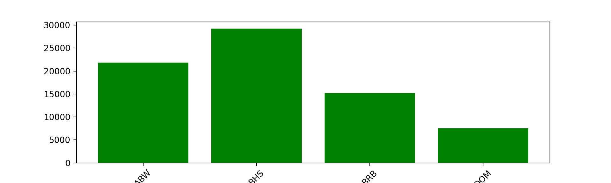

import pandas as pd
import matplotlib.pyplot as plt
import seaborn as sns
import plotly.express as px
import plotly.graph_objects as go
from plotly.subplots import make_subplotsWalkthroughs and Exercises for GenAi-Powered Data Analysis in Python
Data Analytics Kickoff + Course Goals
Walkthrough #1: Setting Up the Python Environment
If you haven’t already installed Python, Jupyter, and the necessary packages, there are instructions on the course repo in the README to do so here.
If you aren’t able to do this on your machine, you may want to check out Google Colab. It’s a free service that allows you to run Jupyter notebooks in the cloud.
# For plotly to load directly in Jupyter notebook
import plotly.offline as pyo
pyo.init_notebook_mode(connected=True)Exercise #1: Setting Up the Python Environment
Follow the instructions above in Walkthrough #1 to check for correct installation of necessary packages. We’ll wait a few minutes to make sure as many of you are set up as possible. Please give a thumbs up in the pulse check if you are ready to move on.
We’ll work with ChatGPT as our GenAI tool. If you are getting errors at this point and would like to ask it for assistance, go for it! We’ll make more use of it throughout the course, and I’ll give tips along the way too.
Day 1: Prompt to Wrangle
Module 1: Data Wrangling with Pandas
Walkthrough #2: Cleaning and Preparing Data with Pandas
Import data from a CSV or from an Excel file
# Load the data from a CSV file
economies = pd.read_csv("economies.csv")Perform an initial exploration of the data
# Display the first few rows of the DataFrame
economies.head() code country year gdp_percapita gross_savings inflation_rate \
0 ABW Aruba 2010 24087.950 13.255 2.078
1 ABW Aruba 2015 27126.620 21.411 0.475
2 ABW Aruba 2020 21832.920 -7.521 -1.338
3 AFG Afghanistan 2010 631.490 59.699 2.179
4 AFG Afghanistan 2015 711.337 22.223 -0.662
total_investment unemployment_rate exports imports income_group
0 NaN 10.600 NaN NaN High income
1 NaN 7.298 NaN NaN High income
2 NaN 13.997 NaN NaN High income
3 30.269 NaN 9.768 32.285 Low income
4 18.427 NaN -11.585 15.309 Low income # Display the information about the DataFrame
economies.info()<class 'pandas.core.frame.DataFrame'>
RangeIndex: 561 entries, 0 to 560
Data columns (total 11 columns):
# Column Non-Null Count Dtype
--- ------ -------------- -----
0 code 561 non-null object
1 country 561 non-null object
2 year 561 non-null int64
3 gdp_percapita 558 non-null float64
4 gross_savings 490 non-null float64
5 inflation_rate 555 non-null float64
6 total_investment 490 non-null float64
7 unemployment_rate 312 non-null float64
8 exports 509 non-null float64
9 imports 506 non-null float64
10 income_group 561 non-null object
dtypes: float64(7), int64(1), object(3)
memory usage: 48.3+ KB# Display summary statistics of the DataFrame
economies.describe() year gdp_percapita gross_savings inflation_rate \
count 561.000000 558.000000 490.000000 555.000000
mean 2015.000000 13447.838281 20.641665 9.762438
std 4.086126 18481.107981 10.813159 103.013164
min 2010.000000 231.549000 -10.331000 -3.900000
25% 2010.000000 1842.815000 14.129000 0.731000
50% 2015.000000 5049.830000 20.536000 2.507000
75% 2020.000000 16509.697500 26.819750 5.406000
max 2020.000000 116921.110000 59.699000 2355.150000
total_investment unemployment_rate exports imports
count 490.000000 312.000000 509.000000 506.000000
mean 25.348976 8.894619 -0.844275 0.813121
std 23.546022 5.605188 17.817279 15.644724
min 0.521000 0.900000 -80.939000 -59.381000
25% 18.449250 5.252250 -8.528000 -8.253000
50% 22.808000 7.400000 1.000000 1.334000
75% 27.644750 10.772000 8.033000 9.348000
max 363.411000 32.050000 159.103000 84.555000 Handle missing data
Remove rows
# Remove rows with any missing values
economies_cleaned_any = economies.dropna(how='any')
economies_cleaned_any code country year gdp_percapita gross_savings inflation_rate \
9 ALB Albania 2010 4097.83 20.023 3.615
10 ALB Albania 2015 3953.61 15.804 1.868
11 ALB Albania 2020 5286.68 13.255 1.603
15 ARG Argentina 2010 10412.97 17.323 10.461
17 ARG Argentina 2020 8554.64 17.798 42.015
.. ... ... ... ... ... ...
541 VNM Vietnam 2015 2582.39 26.444 0.631
542 VNM Vietnam 2020 3498.98 28.603 3.222
552 ZAF South Africa 2010 7311.74 18.012 4.264
553 ZAF South Africa 2015 5731.73 16.300 4.575
554 ZAF South Africa 2020 5067.15 14.602 3.268
total_investment unemployment_rate exports imports \
9 31.318 14.000 10.473 -9.316
10 26.237 17.100 5.272 0.076
11 22.845 12.500 -28.951 -21.446
15 17.706 7.750 13.701 39.414
17 16.845 11.364 -13.124 -10.722
.. ... ... ... ...
541 27.339 2.330 9.713 15.426
542 26.444 3.300 2.822 2.948
552 19.513 24.875 7.718 10.794
553 20.918 25.350 2.925 5.443
554 12.426 29.175 -10.280 -16.615
income_group
9 Upper middle income
10 Upper middle income
11 Upper middle income
15 Upper middle income
17 Upper middle income
.. ...
541 Lower middle income
542 Lower middle income
552 Upper middle income
553 Upper middle income
554 Upper middle income
[282 rows x 11 columns]# Remove rows with missing values in specific columns
economies_cleaned_subset = economies.dropna(subset=['exports', 'imports'])
economies_cleaned_subset code country year gdp_percapita gross_savings inflation_rate \
3 AFG Afghanistan 2010 631.490 59.699 2.179
4 AFG Afghanistan 2015 711.337 22.223 -0.662
5 AFG Afghanistan 2020 580.817 27.132 5.607
6 AGO Angola 2010 3641.440 34.833 14.480
7 AGO Angola 2015 4354.920 28.491 9.159
.. ... ... ... ... ... ...
553 ZAF South Africa 2015 5731.730 16.300 4.575
554 ZAF South Africa 2020 5067.150 14.602 3.268
555 ZMB Zambia 2010 1456.050 37.405 8.500
556 ZMB Zambia 2015 1310.460 40.103 10.107
557 ZMB Zambia 2020 981.311 36.030 16.350
total_investment unemployment_rate exports imports \
3 30.269 NaN 9.768 32.285
4 18.427 NaN -11.585 15.309
5 16.420 NaN -10.424 2.892
6 28.197 NaN -3.266 -21.656
7 34.202 NaN 6.721 -19.515
.. ... ... ... ...
553 20.918 25.350 2.925 5.443
554 12.426 29.175 -10.280 -16.615
555 29.878 NaN 19.476 32.492
556 42.791 NaN -11.407 0.696
557 34.514 NaN 1.143 2.635
income_group
3 Low income
4 Low income
5 Low income
6 Lower middle income
7 Lower middle income
.. ...
553 Upper middle income
554 Upper middle income
555 Lower middle income
556 Lower middle income
557 Lower middle income
[506 rows x 11 columns]Replace missing values with specific value
# Replace missing values with a specific value (e.g., 0 for numerical columns, 'Unknown' for categorical columns)
economies_fill_value = economies.fillna({
'gdp_percapita': 0,
'gross_savings': 0,
'inflation_rate': 0,
'total_investment': 0,
'unemployment_rate': 0,
'exports': 0,
'imports': 0,
'income_group': 'Unknown'
})
# Display the DataFrame after replacing missing values with specific values
economies_fill_value.head() code country year gdp_percapita gross_savings inflation_rate \
0 ABW Aruba 2010 24087.950 13.255 2.078
1 ABW Aruba 2015 27126.620 21.411 0.475
2 ABW Aruba 2020 21832.920 -7.521 -1.338
3 AFG Afghanistan 2010 631.490 59.699 2.179
4 AFG Afghanistan 2015 711.337 22.223 -0.662
total_investment unemployment_rate exports imports income_group
0 0.000 10.600 0.000 0.000 High income
1 0.000 7.298 0.000 0.000 High income
2 0.000 13.997 0.000 0.000 High income
3 30.269 0.000 9.768 32.285 Low income
4 18.427 0.000 -11.585 15.309 Low income This can be extended to replace missing values with the mean, median, or mode of the column too.
Convert a column to a different data type
# Change year to be a string instead of an integer
economies_char_year = economies.astype({'year': 'str'})
# Display the information on the DataFrame with year as a string
economies_char_year.info()<class 'pandas.core.frame.DataFrame'>
RangeIndex: 561 entries, 0 to 560
Data columns (total 11 columns):
# Column Non-Null Count Dtype
--- ------ -------------- -----
0 code 561 non-null object
1 country 561 non-null object
2 year 561 non-null object
3 gdp_percapita 558 non-null float64
4 gross_savings 490 non-null float64
5 inflation_rate 555 non-null float64
6 total_investment 490 non-null float64
7 unemployment_rate 312 non-null float64
8 exports 509 non-null float64
9 imports 506 non-null float64
10 income_group 561 non-null object
dtypes: float64(7), object(4)
memory usage: 48.3+ KB# Change the year of string type back to integer
economies_int_year = economies_char_year.astype({'year': 'int'})
# Display the information on the DataFrame with year as an integer
economies_int_year.info()<class 'pandas.core.frame.DataFrame'>
RangeIndex: 561 entries, 0 to 560
Data columns (total 11 columns):
# Column Non-Null Count Dtype
--- ------ -------------- -----
0 code 561 non-null object
1 country 561 non-null object
2 year 561 non-null int64
3 gdp_percapita 558 non-null float64
4 gross_savings 490 non-null float64
5 inflation_rate 555 non-null float64
6 total_investment 490 non-null float64
7 unemployment_rate 312 non-null float64
8 exports 509 non-null float64
9 imports 506 non-null float64
10 income_group 561 non-null object
dtypes: float64(7), int64(1), object(3)
memory usage: 48.3+ KBRename a column
# Rename the 'income_group' column to 'income_category'
economies_renamed = economies.rename(columns={'income_group': 'income_category'})
economies_renamed.head() code country year gdp_percapita gross_savings inflation_rate \
0 ABW Aruba 2010 24087.950 13.255 2.078
1 ABW Aruba 2015 27126.620 21.411 0.475
2 ABW Aruba 2020 21832.920 -7.521 -1.338
3 AFG Afghanistan 2010 631.490 59.699 2.179
4 AFG Afghanistan 2015 711.337 22.223 -0.662
total_investment unemployment_rate exports imports income_category
0 NaN 10.600 NaN NaN High income
1 NaN 7.298 NaN NaN High income
2 NaN 13.997 NaN NaN High income
3 30.269 NaN 9.768 32.285 Low income
4 18.427 NaN -11.585 15.309 Low income Filtering rows based on conditions
Conditions on a single column
# Filter rows where 'gdp_percapita' is greater than 20,000
economies[economies['gdp_percapita'] > 20000] code country year gdp_percapita gross_savings \
0 ABW Aruba 2010 24087.95 13.255
1 ABW Aruba 2015 27126.62 21.411
2 ABW Aruba 2020 21832.92 -7.521
12 ARE United Arab Emirates 2010 35064.26 31.330
13 ARE United Arab Emirates 2015 37380.57 30.540
.. ... ... ... ... ...
475 SWE Sweden 2015 51274.28 27.743
476 SWE Sweden 2020 51796.38 29.755
528 USA United States 2010 48403.30 15.466
529 USA United States 2015 56848.51 20.141
530 USA United States 2020 63415.99 17.802
inflation_rate total_investment unemployment_rate exports imports \
0 2.078 NaN 10.600 NaN NaN
1 0.475 NaN 7.298 NaN NaN
2 -1.338 NaN 13.997 NaN NaN
12 0.878 27.121 NaN 7.540 0.405
13 4.070 25.639 NaN 3.055 2.488
.. ... ... ... ... ...
475 0.704 24.429 7.400 4.995 5.031
476 0.657 24.518 8.292 -5.191 -5.358
528 1.637 18.743 9.608 12.137 13.128
529 0.121 21.163 5.275 0.421 5.175
530 1.248 20.988 8.108 -12.970 -9.285
income_group
0 High income
1 High income
2 High income
12 High income
13 High income
.. ...
475 High income
476 High income
528 High income
529 High income
530 High income
[121 rows x 11 columns]# Filter rows where 'income_group' is 'High income'
economies[economies['income_group'] == 'High income'] code country year gdp_percapita gross_savings \
0 ABW Aruba 2010 24087.95 13.255
1 ABW Aruba 2015 27126.62 21.411
2 ABW Aruba 2020 21832.92 -7.521
12 ARE United Arab Emirates 2010 35064.26 31.330
13 ARE United Arab Emirates 2015 37380.57 30.540
.. ... ... ... ... ...
526 URY Uruguay 2015 16692.65 17.223
527 URY Uruguay 2020 15777.96 12.873
528 USA United States 2010 48403.30 15.466
529 USA United States 2015 56848.51 20.141
530 USA United States 2020 63415.99 17.802
inflation_rate total_investment unemployment_rate exports imports \
0 2.078 NaN 10.600 NaN NaN
1 0.475 NaN 7.298 NaN NaN
2 -1.338 NaN 13.997 NaN NaN
12 0.878 27.121 NaN 7.540 0.405
13 4.070 25.639 NaN 3.055 2.488
.. ... ... ... ... ...
526 8.666 17.477 7.525 -7.564 -8.145
527 9.756 14.319 10.350 -28.231 -12.544
528 1.637 18.743 9.608 12.137 13.128
529 0.121 21.163 5.275 0.421 5.175
530 1.248 20.988 8.108 -12.970 -9.285
income_group
0 High income
1 High income
2 High income
12 High income
13 High income
.. ...
526 High income
527 High income
528 High income
529 High income
530 High income
[180 rows x 11 columns]Conditions on multiple columns
# Filter rows where inflation_rate is less than 0 and income_group is 'Low income'
economies[(economies['inflation_rate'] < 0) & (economies['income_group'] == 'Low income')] code country year gdp_percapita gross_savings inflation_rate \
4 AFG Afghanistan 2015 711.337 22.223 -0.662
42 BFA Burkina Faso 2010 648.365 20.194 -0.608
486 TCD Chad 2010 895.354 25.871 -2.110
total_investment unemployment_rate exports imports income_group
4 18.427 NaN -11.585 15.309 Low income
42 21.990 NaN 54.547 13.986 Low income
486 34.388 NaN -5.488 17.218 Low income Exercise #2: Cleaning and Preparing Data with Pandas
# Load the populations data from a CSV file
populations = pd.read_csv("populations.csv")
# Examine the first few rows
populations.head() country_code country year fertility_rate life_expectancy size \
0 ABW Aruba 2010 1.941 75.404 100341
1 ABW Aruba 2015 1.972 75.683 104257
2 ABW Aruba 2020 1.325 75.723 106585
3 AFG Afghanistan 2010 6.099 60.851 28189672
4 AFG Afghanistan 2015 5.405 62.659 33753499
official_state_name sovereignty continent \
0 Aruba Netherlands North America
1 Aruba Netherlands North America
2 Aruba Netherlands North America
3 The Islamic Republic of Afghanistan UN member Asia
4 The Islamic Republic of Afghanistan UN member Asia
region
0 Caribbean
1 Caribbean
2 Caribbean
3 Southern and Central Asia
4 Southern and Central Asia # Display the information about the DataFrame
populations.info()<class 'pandas.core.frame.DataFrame'>
RangeIndex: 645 entries, 0 to 644
Data columns (total 10 columns):
# Column Non-Null Count Dtype
--- ------ -------------- -----
0 country_code 645 non-null object
1 country 645 non-null object
2 year 645 non-null int64
3 fertility_rate 627 non-null float64
4 life_expectancy 623 non-null float64
5 size 645 non-null int64
6 official_state_name 645 non-null object
7 sovereignty 645 non-null object
8 continent 645 non-null object
9 region 645 non-null object
dtypes: float64(2), int64(2), object(6)
memory usage: 50.5+ KB# Display summary statistics of the DataFrame
populations.describe() year fertility_rate life_expectancy size
count 645.000000 627.000000 623.000000 6.450000e+02
mean 2015.000000 2.727907 71.553996 3.429149e+07
std 4.085651 1.386750 8.118422 1.346457e+08
min 2010.000000 0.837000 45.596000 1.024100e+04
25% 2010.000000 1.670000 65.742000 7.550310e+05
50% 2015.000000 2.216000 73.004000 6.292731e+06
75% 2020.000000 3.537500 77.720695 2.301265e+07
max 2020.000000 7.485000 85.497561 1.411100e+09Handle Missing Data
Remove rows
# Remove rows with any missing values
populations.dropna(how='any') country_code country year fertility_rate life_expectancy \
0 ABW Aruba 2010 1.941 75.404
1 ABW Aruba 2015 1.972 75.683
2 ABW Aruba 2020 1.325 75.723
3 AFG Afghanistan 2010 6.099 60.851
4 AFG Afghanistan 2015 5.405 62.659
.. ... ... ... ... ...
640 ZMB Zambia 2015 4.793 61.208
641 ZMB Zambia 2020 4.379 62.380
642 ZWE Zimbabwe 2010 4.025 50.652
643 ZWE Zimbabwe 2015 3.849 59.591
644 ZWE Zimbabwe 2020 3.545 61.124
size official_state_name sovereignty \
0 100341 Aruba Netherlands
1 104257 Aruba Netherlands
2 106585 Aruba Netherlands
3 28189672 The Islamic Republic of Afghanistan UN member
4 33753499 The Islamic Republic of Afghanistan UN member
.. ... ... ...
640 16248230 The Republic of Zambia UN member
641 18927715 The Republic of Zambia UN member
642 12839771 The Republic of Zimbabwe UN member
643 14154937 The Republic of Zimbabwe UN member
644 15669666 The Republic of Zimbabwe UN member
continent region
0 North America Caribbean
1 North America Caribbean
2 North America Caribbean
3 Asia Southern and Central Asia
4 Asia Southern and Central Asia
.. ... ...
640 Africa Eastern Africa
641 Africa Eastern Africa
642 Africa Eastern Africa
643 Africa Eastern Africa
644 Africa Eastern Africa
[622 rows x 10 columns]# Remove rows with missing values in specific columns
populations.dropna(subset=['fertility_rate', 'life_expectancy']) country_code country year fertility_rate life_expectancy \
0 ABW Aruba 2010 1.941 75.404
1 ABW Aruba 2015 1.972 75.683
2 ABW Aruba 2020 1.325 75.723
3 AFG Afghanistan 2010 6.099 60.851
4 AFG Afghanistan 2015 5.405 62.659
.. ... ... ... ... ...
640 ZMB Zambia 2015 4.793 61.208
641 ZMB Zambia 2020 4.379 62.380
642 ZWE Zimbabwe 2010 4.025 50.652
643 ZWE Zimbabwe 2015 3.849 59.591
644 ZWE Zimbabwe 2020 3.545 61.124
size official_state_name sovereignty \
0 100341 Aruba Netherlands
1 104257 Aruba Netherlands
2 106585 Aruba Netherlands
3 28189672 The Islamic Republic of Afghanistan UN member
4 33753499 The Islamic Republic of Afghanistan UN member
.. ... ... ...
640 16248230 The Republic of Zambia UN member
641 18927715 The Republic of Zambia UN member
642 12839771 The Republic of Zimbabwe UN member
643 14154937 The Republic of Zimbabwe UN member
644 15669666 The Republic of Zimbabwe UN member
continent region
0 North America Caribbean
1 North America Caribbean
2 North America Caribbean
3 Asia Southern and Central Asia
4 Asia Southern and Central Asia
.. ... ...
640 Africa Eastern Africa
641 Africa Eastern Africa
642 Africa Eastern Africa
643 Africa Eastern Africa
644 Africa Eastern Africa
[622 rows x 10 columns]Replace missing values with specific value
# Replace missing values with a specific value (e.g., 0 for numerical columns,
# 'Unknown' for categorical columns)
populations_fill_value = populations.fillna({
'fertility_rate': 0,
'life_expectancy': 0,
'size': 0,
'continent': 'Unknown',
'region': 'Unknown'
})
populations_fill_value country_code country year fertility_rate life_expectancy \
0 ABW Aruba 2010 1.941 75.404
1 ABW Aruba 2015 1.972 75.683
2 ABW Aruba 2020 1.325 75.723
3 AFG Afghanistan 2010 6.099 60.851
4 AFG Afghanistan 2015 5.405 62.659
.. ... ... ... ... ...
640 ZMB Zambia 2015 4.793 61.208
641 ZMB Zambia 2020 4.379 62.380
642 ZWE Zimbabwe 2010 4.025 50.652
643 ZWE Zimbabwe 2015 3.849 59.591
644 ZWE Zimbabwe 2020 3.545 61.124
size official_state_name sovereignty \
0 100341 Aruba Netherlands
1 104257 Aruba Netherlands
2 106585 Aruba Netherlands
3 28189672 The Islamic Republic of Afghanistan UN member
4 33753499 The Islamic Republic of Afghanistan UN member
.. ... ... ...
640 16248230 The Republic of Zambia UN member
641 18927715 The Republic of Zambia UN member
642 12839771 The Republic of Zimbabwe UN member
643 14154937 The Republic of Zimbabwe UN member
644 15669666 The Republic of Zimbabwe UN member
continent region
0 North America Caribbean
1 North America Caribbean
2 North America Caribbean
3 Asia Southern and Central Asia
4 Asia Southern and Central Asia
.. ... ...
640 Africa Eastern Africa
641 Africa Eastern Africa
642 Africa Eastern Africa
643 Africa Eastern Africa
644 Africa Eastern Africa
[645 rows x 10 columns]Convert a Column to a Different Data Type and Rename a Column
Convert a Column to a Different Data Type
# Convert the 'year' column to string type
populations['year'] = populations['year'].astype(str)
populations.dtypescountry_code object
country object
year object
fertility_rate float64
life_expectancy float64
size int64
official_state_name object
sovereignty object
continent object
region object
dtype: object# Convert it back to integer
populations['year'] = populations['year'].astype(int)
populations.dtypescountry_code object
country object
year int64
fertility_rate float64
life_expectancy float64
size int64
official_state_name object
sovereignty object
continent object
region object
dtype: objectRename a Column
# Rename the 'fertility_rate' column to 'fertility'
populations_renamed = populations.rename(columns={'fertility_rate': 'fertility'})
populations_renamed country_code country year fertility life_expectancy size \
0 ABW Aruba 2010 1.941 75.404 100341
1 ABW Aruba 2015 1.972 75.683 104257
2 ABW Aruba 2020 1.325 75.723 106585
3 AFG Afghanistan 2010 6.099 60.851 28189672
4 AFG Afghanistan 2015 5.405 62.659 33753499
.. ... ... ... ... ... ...
640 ZMB Zambia 2015 4.793 61.208 16248230
641 ZMB Zambia 2020 4.379 62.380 18927715
642 ZWE Zimbabwe 2010 4.025 50.652 12839771
643 ZWE Zimbabwe 2015 3.849 59.591 14154937
644 ZWE Zimbabwe 2020 3.545 61.124 15669666
official_state_name sovereignty continent \
0 Aruba Netherlands North America
1 Aruba Netherlands North America
2 Aruba Netherlands North America
3 The Islamic Republic of Afghanistan UN member Asia
4 The Islamic Republic of Afghanistan UN member Asia
.. ... ... ...
640 The Republic of Zambia UN member Africa
641 The Republic of Zambia UN member Africa
642 The Republic of Zimbabwe UN member Africa
643 The Republic of Zimbabwe UN member Africa
644 The Republic of Zimbabwe UN member Africa
region
0 Caribbean
1 Caribbean
2 Caribbean
3 Southern and Central Asia
4 Southern and Central Asia
.. ...
640 Eastern Africa
641 Eastern Africa
642 Eastern Africa
643 Eastern Africa
644 Eastern Africa
[645 rows x 10 columns]Filter a DataFrame
# Filter the DataFrame to include only rows where the 'continent' is 'Asia'
populations[populations['continent'] == 'Asia'] country_code country year fertility_rate life_expectancy \
3 AFG Afghanistan 2010 6.099 60.851
4 AFG Afghanistan 2015 5.405 62.659
5 AFG Afghanistan 2020 4.750 62.575
15 ARE United Arab Emirates 2010 1.790 78.334
16 ARE United Arab Emirates 2015 1.486 79.223
.. ... ... ... ... ...
625 VNM Vietnam 2015 1.951 73.876
626 VNM Vietnam 2020 1.955 75.378
633 YEM Yemen 2010 4.855 67.280
634 YEM Yemen 2015 4.322 65.873
635 YEM Yemen 2020 3.886 64.650
size official_state_name sovereignty continent \
3 28189672 The Islamic Republic of Afghanistan UN member Asia
4 33753499 The Islamic Republic of Afghanistan UN member Asia
5 38972230 The Islamic Republic of Afghanistan UN member Asia
15 8481771 The United Arab Emirates UN member Asia
16 8916899 The United Arab Emirates UN member Asia
.. ... ... ... ...
625 92191398 The Socialist Republic of Vietnam UN member Asia
626 96648685 The Socialist Republic of Vietnam UN member Asia
633 24743946 The Republic of Yemen UN member Asia
634 28516545 The Republic of Yemen UN member Asia
635 32284046 The Republic of Yemen UN member Asia
region
3 Southern and Central Asia
4 Southern and Central Asia
5 Southern and Central Asia
15 Middle East
16 Middle East
.. ...
625 Southeast Asia
626 Southeast Asia
633 Middle East
634 Middle East
635 Middle East
[150 rows x 10 columns]# Filter the DataFrame to include only rows where the 'year' is 2020
populations[populations['year'] == 2020] country_code country year fertility_rate life_expectancy \
2 ABW Aruba 2020 1.325 75.723
5 AFG Afghanistan 2020 4.750 62.575
8 AGO Angola 2020 5.371 62.261
11 ALB Albania 2020 1.400 76.989
14 AND Andorra 2020 NaN NaN
.. ... ... ... ... ...
632 WSM Samoa 2020 3.997 72.768
635 YEM Yemen 2020 3.886 64.650
638 ZAF South Africa 2020 2.401 65.252
641 ZMB Zambia 2020 4.379 62.380
644 ZWE Zimbabwe 2020 3.545 61.124
size official_state_name sovereignty \
2 106585 Aruba Netherlands
5 38972230 The Islamic Republic of Afghanistan UN member
8 33428486 The Republic of Angola UN member
11 2837849 The Republic of Albania UN member
14 77700 The Principality of Andorra UN member
.. ... ... ...
632 214929 The Independent State of Samoa UN member
635 32284046 The Republic of Yemen UN member
638 58801927 The Republic of South Africa UN member
641 18927715 The Republic of Zambia UN member
644 15669666 The Republic of Zimbabwe UN member
continent region
2 North America Caribbean
5 Asia Southern and Central Asia
8 Africa Central Africa
11 Europe Southern Europe
14 Europe Southern Europe
.. ... ...
632 Oceania Polynesia
635 Asia Middle East
638 Africa Southern Africa
641 Africa Eastern Africa
644 Africa Eastern Africa
[215 rows x 10 columns]# Filter the DataFrame to include only rows where the 'fertility_rate' is greater than 2
populations[populations['fertility_rate'] > 2] country_code country year fertility_rate life_expectancy \
3 AFG Afghanistan 2010 6.099 60.851
4 AFG Afghanistan 2015 5.405 62.659
5 AFG Afghanistan 2020 4.750 62.575
6 AGO Angola 2010 6.194 56.726
7 AGO Angola 2015 5.774 60.655
.. ... ... ... ... ...
640 ZMB Zambia 2015 4.793 61.208
641 ZMB Zambia 2020 4.379 62.380
642 ZWE Zimbabwe 2010 4.025 50.652
643 ZWE Zimbabwe 2015 3.849 59.591
644 ZWE Zimbabwe 2020 3.545 61.124
size official_state_name sovereignty continent \
3 28189672 The Islamic Republic of Afghanistan UN member Asia
4 33753499 The Islamic Republic of Afghanistan UN member Asia
5 38972230 The Islamic Republic of Afghanistan UN member Asia
6 23364185 The Republic of Angola UN member Africa
7 28127721 The Republic of Angola UN member Africa
.. ... ... ... ...
640 16248230 The Republic of Zambia UN member Africa
641 18927715 The Republic of Zambia UN member Africa
642 12839771 The Republic of Zimbabwe UN member Africa
643 14154937 The Republic of Zimbabwe UN member Africa
644 15669666 The Republic of Zimbabwe UN member Africa
region
3 Southern and Central Asia
4 Southern and Central Asia
5 Southern and Central Asia
6 Central Africa
7 Central Africa
.. ...
640 Eastern Africa
641 Eastern Africa
642 Eastern Africa
643 Eastern Africa
644 Eastern Africa
[366 rows x 10 columns]Module 2: Transforming and Aggregating Data with Pandas
Walkthrough #3: Summarizing Data with Pandas
Grouping data
# Get the mean gdp per capita for each income_group
economies.groupby('income_group')['gdp_percapita'].mean()income_group
High income 33781.737556
Low income 688.904493
Lower middle income 2329.609629
Not classified 7805.646667
Upper middle income 6679.059320
Name: gdp_percapita, dtype: float64Applying Functions
Applying a function element-wise with map()
# Convert income_group to uppercase using map()
economies_plus = economies.copy()
economies_plus['income_group_upper'] = economies['income_group'].map(str.upper)
economies_plus.head() code country year gdp_percapita gross_savings inflation_rate \
0 ABW Aruba 2010 24087.950 13.255 2.078
1 ABW Aruba 2015 27126.620 21.411 0.475
2 ABW Aruba 2020 21832.920 -7.521 -1.338
3 AFG Afghanistan 2010 631.490 59.699 2.179
4 AFG Afghanistan 2015 711.337 22.223 -0.662
total_investment unemployment_rate exports imports income_group \
0 NaN 10.600 NaN NaN High income
1 NaN 7.298 NaN NaN High income
2 NaN 13.997 NaN NaN High income
3 30.269 NaN 9.768 32.285 Low income
4 18.427 NaN -11.585 15.309 Low income
income_group_upper
0 HIGH INCOME
1 HIGH INCOME
2 HIGH INCOME
3 LOW INCOME
4 LOW INCOME Applying a Function to Groups with groupby() and agg()
# Calculate the median gdp_percapita and inflation_rate for each income_group
economies.groupby('income_group').agg({
'gdp_percapita': 'median',
'inflation_rate': 'median'
}) gdp_percapita inflation_rate
income_group
High income 29529.305 0.8595
Low income 631.490 5.0490
Lower middle income 2012.150 4.4370
Not classified 10568.100 121.7380
Upper middle income 6083.870 2.7645Summary tables
# Create a pivot table of gdp_percapita and inflation_rate by income_group and year
pd.pivot_table(
economies,
values=['gdp_percapita', 'inflation_rate'],
index=['income_group'],
columns=['year'],
aggfunc='mean'
) gdp_percapita inflation_rate \
year 2010 2015 2020 2010
income_group
High income 33265.256167 33484.692333 34595.264167 2.168550
Low income 736.990261 685.146565 644.576652 5.915000
Lower middle income 2151.058283 2399.781453 2437.989151 5.778264
Not classified 11158.180000 10568.100000 1690.660000 28.187000
Upper middle income 6463.234694 6919.517551 6654.425714 4.251592
year 2015 2020
income_group
High income 0.910950 0.666333
Low income 7.187591 14.530182
Lower middle income 4.951170 18.002566
Not classified 121.738000 2355.150000
Upper middle income 3.186125 3.886408 Analyzing categorical data
Using cross-tabulation
# Show counts of income_group by year
pd.crosstab(economies['income_group'], economies['year'])year 2010 2015 2020
income_group
High income 60 60 60
Low income 24 24 24
Lower middle income 53 53 53
Not classified 1 1 1
Upper middle income 49 49 49By getting group counts
# Count the occurrences of each income_group
economies['income_group'].value_counts()income_group
High income 180
Lower middle income 159
Upper middle income 147
Low income 72
Not classified 3
Name: count, dtype: int64Exercise #3: Summarizing Data with Pandas
Grouping Data
# Group data by continent and calculate the mean life expectancy
populations.groupby('continent')['life_expectancy'].mean()continent
Africa 61.897980
Asia 73.611049
Europe 78.443978
North America 74.679029
Oceania 71.408114
South America 73.433389
Name: life_expectancy, dtype: float64Applying Functions
Applying a function element-wise with map()
# Convert continent to uppercase using map()
populations_plus = populations.copy()
populations_plus['continent_upper'] = populations['continent'].map(str.upper)
populations_plus.head() country_code country year fertility_rate life_expectancy size \
0 ABW Aruba 2010 1.941 75.404 100341
1 ABW Aruba 2015 1.972 75.683 104257
2 ABW Aruba 2020 1.325 75.723 106585
3 AFG Afghanistan 2010 6.099 60.851 28189672
4 AFG Afghanistan 2015 5.405 62.659 33753499
official_state_name sovereignty continent \
0 Aruba Netherlands North America
1 Aruba Netherlands North America
2 Aruba Netherlands North America
3 The Islamic Republic of Afghanistan UN member Asia
4 The Islamic Republic of Afghanistan UN member Asia
region continent_upper
0 Caribbean NORTH AMERICA
1 Caribbean NORTH AMERICA
2 Caribbean NORTH AMERICA
3 Southern and Central Asia ASIA
4 Southern and Central Asia ASIA Applying a function to groups with groupby() and agg()
# Calculate the median fertility rate and life expectancy for each continent
populations.groupby('continent').agg({
'fertility_rate': 'median',
'life_expectancy': 'median'
}) fertility_rate life_expectancy
continent
Africa 4.5370 61.123500
Asia 2.1940 73.285500
Europe 1.5550 80.182927
North America 1.8350 74.821000
Oceania 3.2025 70.311000
South America 2.3195 73.688000Summary Tables
# Create a pivot table of fertility rate and life expectancy by continent and year
pd.pivot_table(
populations,
values=['fertility_rate', 'life_expectancy'],
index=['continent'],
columns=['year'],
aggfunc='mean'
) fertility_rate life_expectancy \
year 2010 2015 2020 2010 2015
continent
Africa 4.713426 4.424685 4.104963 59.746813 62.374598
Asia 2.559520 2.447560 2.245120 72.711414 73.914594
Europe 1.635364 1.614674 1.534233 77.781258 78.743396
North America 2.101258 1.960485 1.767803 74.193234 75.124420
Oceania 3.328375 3.059412 2.755941 70.761218 71.353058
South America 2.405833 2.266500 2.062083 73.001000 74.125333
year 2020
continent
Africa 63.572531
Asia 74.207140
Europe 78.807279
North America 74.720697
Oceania 72.110066
South America 73.173833 Analyzing Categorical Data
Using Cross-Tabulation
# Create a cross-tabulation of continent and year
pd.crosstab(populations['continent'], populations['year'])year 2010 2015 2020
continent
Africa 54 54 54
Asia 50 50 50
Europe 46 46 46
North America 34 34 34
Oceania 19 19 19
South America 12 12 12By Getting Group Counts
# Count the occurrences of each region
populations['region'].value_counts()region
Caribbean 66
Eastern Africa 54
Middle East 54
Western Africa 48
Southern Europe 45
Southern and Central Asia 42
South America 36
Southeast Asia 33
Eastern Europe 30
Western Europe 27
Central Africa 27
Central America 24
Eastern Asia 21
Micronesia 21
Nordic Countries 18
Northern Africa 18
Polynesia 15
Southern Africa 15
Melanesia 15
North America 12
Baltic Countries 9
British Islands 9
Australia and New Zealand 6
Name: count, dtype: int64Module 3: Exploring and Learning from Mistakes
Use the provided prompt (in prompt.md on GitHub) as your initial guide. Here are 8 Python errors that you’ll attempt to use LLMs to help you debug. Make sure to run the code in Jupyter first and then try to debug!
Walkthrough and Exercise #4: Debug with GenAI
### 1
populations.hedAttributeError: 'DataFrame' object has no attribute 'hed'### 2
populations.size.mean()AttributeError: 'int' object has no attribute 'mean'### 3
populations['Life_Expectancy'].mean()KeyError: 'Life_Expectancy'### 4
asia = populations[populations['continent'] = 'Asia']invalid syntax (<string>, line 3)### 5
populations[populations['continent'] == 'Asia' & populations['year'] == 2020]TypeError: Cannot perform 'rand_' with a dtyped [int64] array and scalar of type [bool]### 6
populations[populations['population_size'] > 1_000_000]KeyError: 'population_size'### 7
populations['double_size'] = populations['size'].apply(lambda x: x * 2, axis=1)TypeError: <lambda>() got an unexpected keyword argument 'axis'### 8
populations['fertility_rate'].fillna(0)Day 2: Visualize to Tell
Module 4: Data Visualization Basics with Matplotlib and Seaborn
Walkthrough #5: Data Visualization Techniques
Line plot with Matplotlib
# Filter data for a specific country
afg_data = economies[economies['code'] == 'AFG']
# Line plot of gdp_percapita over the years
plt.figure(figsize=(10, 3));
plt.plot(afg_data['year'], afg_data['gdp_percapita'],
marker='o', linestyle='-', color='b');
plt.show();Bar chart with Matplotlib
# Filter data for Caribbean countries and the year 2020
caribbean_countries = ['ABW', 'BHS', 'BRB', 'DOM']
data_2020_caribbean = economies[(economies['year'] == 2020) & (economies['code'].isin(caribbean_countries))]
# Bar chart of gdp_percapita for different Caribbean countries in 2020
plt.figure(figsize=(10, 3))
plt.bar(x=data_2020_caribbean['code'],
height=data_2020_caribbean['gdp_percapita'],
color='g')
plt.xticks(rotation=45);
plt.show();
# Horizontal version
plt.figure(figsize=(10, 3))
plt.barh(y=data_2020_caribbean['code'],
width=data_2020_caribbean['gdp_percapita'],
color='g')
plt.show();Adding labels and titles
# Filter data for a specific country
liberia_data = economies[economies['code'] == 'LBR']
# Line plot of gdp_percapita over the years with labels and titles
plt.figure(figsize=(10, 3))
plt.plot(liberia_data['year'], liberia_data['gdp_percapita'], marker='o', linestyle='-', color='r');
plt.xlabel('Year');
plt.ylabel('GDP Per Capita');
plt.title('GDP Per Capita Over Years for Liberia (LBR)');
plt.grid(True);
plt.show();Adjusting axes and tick marks
# Bar chart of gdp_percapita for different Caribbean countries in 2020 with
# adjusted axes and tick marks
plt.figure(figsize=(10, 3))
plt.bar(data_2020_caribbean['code'], data_2020_caribbean['gdp_percapita'], color='purple')
plt.xlabel('Country Code')
plt.ylabel('GDP Per Capita')
plt.title('GDP Per Capita for Different Countries in 2020')
# Adjust axes
plt.ylim(0, max(data_2020_caribbean['gdp_percapita']) + 5000);
# Adjust tick marks
plt.xticks(rotation=45);
plt.yticks(range(0, int(max(data_2020_caribbean['gdp_percapita']) + 5000), 5000));
plt.grid(axis='y')
plt.show();Histogram with Seaborn
plt.figure(figsize=(10, 3))
sns.histplot(economies['gdp_percapita'], bins=30, kde=True)
plt.xlabel('GDP Per Capita')
plt.show();Boxplot with Seaborn
plt.figure(figsize=(10, 3))
sns.boxplot(x='gdp_percapita', y='income_group', data=economies)
plt.xlabel('GDP Per Capita')
plt.ylabel('Income Group')
plt.title('Boxplot of GDP Per Capita by Income Group')
plt.show();Violin plot with Seaborn
plt.figure(figsize=(10, 3))
sns.violinplot(x='gdp_percapita', y='income_group', data=economies)
plt.xlabel('GDP Per Capita')
plt.ylabel('Income Group')
plt.title('Violin Plot of GDP Per Capita by Income Group')
plt.show();Exercise #5: Data Visualization Techniques
Line Plot with Matplotlib
# Filter data for India
india_data = populations[populations['country_code'] == 'IND']
# Line plot of fertility rate over the years
plt.figure(figsize=(10, 3))
plt.plot(india_data['year'], india_data['fertility_rate'], marker='o', linestyle='-', color='b')
plt.show();Bar Chart with Matplotlib
# Filter data for selected Asian countries and the year 2020
asian_countries = ['CHN', 'IND', 'IDN', 'PAK', 'BGD']
data_2020_asia = populations[(populations['year'] == 2020) & (populations['country_code'].isin(asian_countries))]
# Bar chart of population size for selected Asian countries in 2020
plt.figure(figsize=(10, 3))
plt.bar(data_2020_asia['country_code'], data_2020_asia['size'], color='g')
plt.show();Adding Labels and Titles
# Filter data for Nigeria
nigeria_data = populations[populations['country_code'] == 'NGA']
# Line plot of life expectancy over the years with labels and titles
plt.figure(figsize=(10, 3))
plt.plot(nigeria_data['year'], nigeria_data['life_expectancy'],
marker='o', linestyle='-', color='r')
plt.xlabel('Year')
plt.ylabel('Life Expectancy')
plt.title('Life Expectancy Over Years for Nigeria (NGA)')
plt.grid(True)
plt.show();Adjusting Axes and Tick Marks
# Filter data for selected African countries ('NGA', 'ETH', 'EGY', 'ZAF', 'DZA')
# and the year 2020
african_countries = ['NGA', 'ETH', 'EGY', 'ZAF', 'DZA']
data_2020_africa = populations[(populations['year'] == 2020) & (populations['country_code'].isin(african_countries))]
# Bar chart of fertility rate for selected African countries in 2020 with
# adjusted axes and tick marks
plt.figure(figsize=(10, 3))
plt.bar(data_2020_africa['country_code'], data_2020_africa['fertility_rate'], color='purple')
plt.xlabel('Country Code')
plt.ylabel('Fertility Rate')
plt.title('Fertility Rate for Selected African Countries in 2020')
# Adjust axes
plt.ylim(0, max(data_2020_africa['fertility_rate']) + 1);
# Adjust tick marks
plt.xticks(rotation=45);
plt.yticks(range(0, int(max(data_2020_africa['fertility_rate']) + 1), 1));
plt.grid(axis='y');
plt.show();Histogram with Seaborn
# Histogram of life expectancy
plt.figure(figsize=(10, 3))
sns.histplot(populations['life_expectancy'], bins=30, kde=True)
plt.xlabel('Life Expectancy')
plt.ylabel('Frequency')
plt.title('Histogram of Life Expectancy')
plt.show();Boxplot with Seaborn
# Boxplot of fertility rate by continent
plt.figure(figsize=(10, 3))
sns.boxplot(x='continent', y='fertility_rate', data=populations)
plt.xlabel('Continent')
plt.ylabel('Fertility Rate')
plt.title('Boxplot of Fertility Rate by Continent')
plt.show();Violin Plot with Seaborn
# Violin plot of fertility rate by continent
plt.figure(figsize=(10, 3))
sns.violinplot(x='continent', y='fertility_rate', data=populations)
plt.xlabel('Continent')
plt.ylabel('Fertility Rate')
plt.title('Violin Plot of Fertility Rate by Continent')
plt.show();Module 5: Interactive Data Visualization with Plotly
Walkthrough #6: Interactive Charts and Dashboards with Plotly
Basic interactive chart
# Filter data for a specific country
afg_data = economies[economies['code'] == 'AFG']
# Create an interactive line chart
fig = px.line(afg_data, x='year', y='gdp_percapita',
title='GDP Per Capita Over Years for Afghanistan (AFG)')
fig.show()Adding interactive elements
# Create an interactive scatter plot
fig = px.scatter(economies, x='gdp_percapita', y='gross_savings', color='income_group',
hover_name='code', title='GDP Per Capita vs. Gross Savings',
labels={'gdp_percapita': 'GDP Per Capita', 'gross_savings': 'Gross Savings (%)'})
# Add hover, zoom, and selection tools
fig.update_traces(marker=dict(size=10), selector=dict(mode='markers'));
fig.update_layout(hovermode='closest');
fig.show()Designing a simple dashboard
# Filter data for the year 2020
data_2020 = economies[economies['year'] == 2020]
# Create a subplot figure with 1 row and 2 columns
fig = make_subplots(rows=1, cols=2,
subplot_titles=('GDP Per Capita Over Years for Afghanistan',
'GDP Per Capita for Different Countries in 2020'))
# Line chart of GDP Per Capita for Afghanistan
afg_data = economies[economies['code'] == 'AFG']
line_chart = go.Scatter(x=afg_data['year'], y=afg_data['gdp_percapita'],
mode='lines+markers', name='Afghanistan');
fig.add_trace(line_chart, row=1, col=1);
# Bar chart of GDP Per Capita for different countries in 2020
bar_chart = go.Bar(x=data_2020['code'], y=data_2020['gdp_percapita'], name='2020')
fig.add_trace(bar_chart, row=1, col=2);
# Update layout
fig.update_layout(title_text='Simple Dashboard with Multiple Charts',
showlegend=False, width=830, height=500);
fig.show()Exercise #6: Interactive Charts and Dashboards with Plotly
Basic Interactive Chart
# Filter data for a specific country (Brazil)
bra_data = populations[populations['country_code'] == 'BRA']
# Create an interactive line chart (Fertility Rate Over Years)
fig = px.line(bra_data, x='year', y='fertility_rate',
title='Fertility Rate Over Years for Brazil (BRA)')
fig.show()Adding Interactive Elements
# Create an interactive scatter plot
fig = px.scatter(
populations,
x='fertility_rate', y='life_expectancy', color='continent',
hover_name='country', title='Fertility Rate vs. Life Expectancy',
labels={'fertility_rate': 'Fertility Rate', 'life_expectancy': 'Life Expectancy'}
)
# Add hover, zoom, and selection tools
fig.update_traces(marker=dict(size=10), selector=dict(mode='markers'));
fig.update_layout(hovermode='closest');
fig.show()Designing a Simple Dashboard
# Filter data for the year 2020
data_2020 = populations[populations['year'] == 2020]
# Create a subplot figure with 1 row and 2 columns
fig = make_subplots(
rows=1, cols=2,
subplot_titles=('Life Expectancy Over Years for Brazil',
'Life Expectancy for Different Countries in 2020'));
# Line chart of Life Expectancy for Brazil
bra_data = populations[populations['country_code'] == 'BRA']
line_chart = go.Scatter(x=bra_data['year'], y=bra_data['life_expectancy'],
mode='lines+markers', name='Brazil')
fig.add_trace(line_chart, row=1, col=1);
# Bar chart of Life Expectancy for South American countries in 2020
south_american_data_2020 = data_2020[data_2020['continent'] == 'South America']
bar_chart = go.Bar(x=south_american_data_2020['country'],
y=south_american_data_2020['life_expectancy'], name='2020')
fig.add_trace(bar_chart, row=1, col=2);
# Update layout to add a title and hide the legend
fig.update_layout(title_text='Simple Dashboard with Multiple Charts',
showlegend=False);
fig.show()